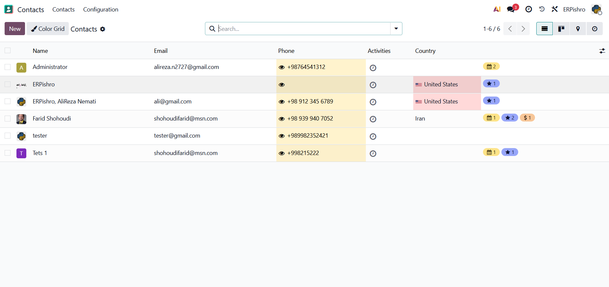
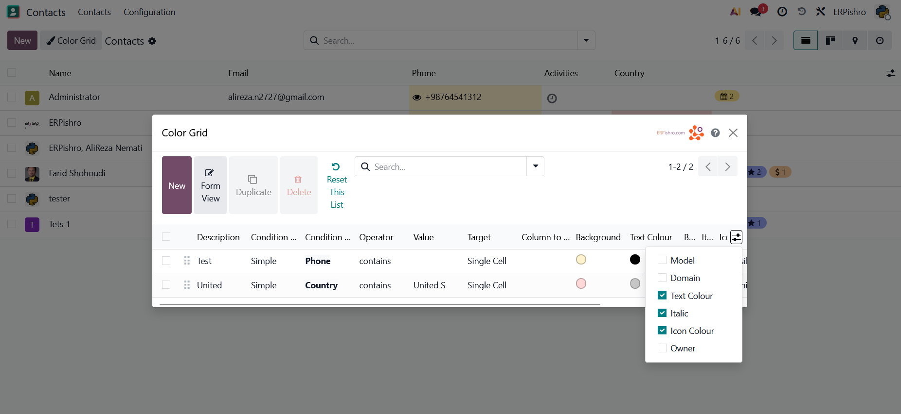
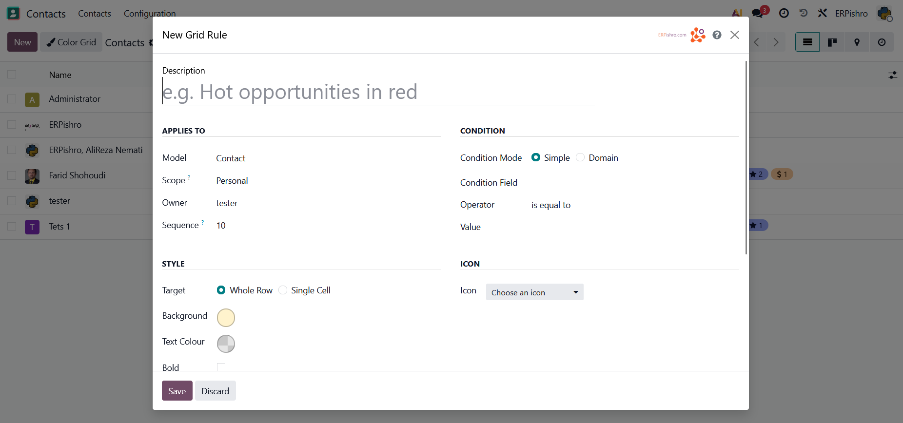
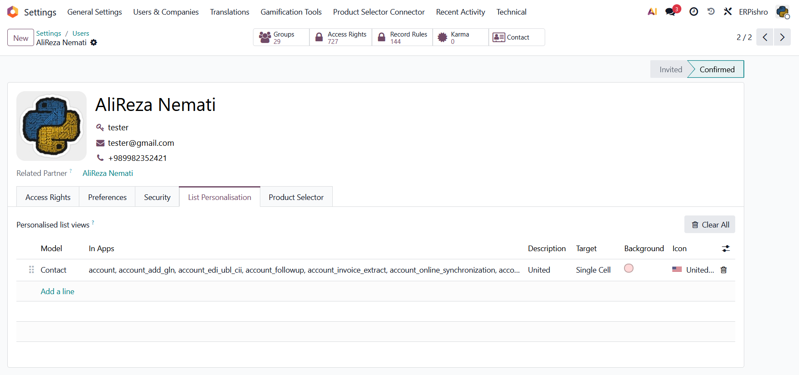
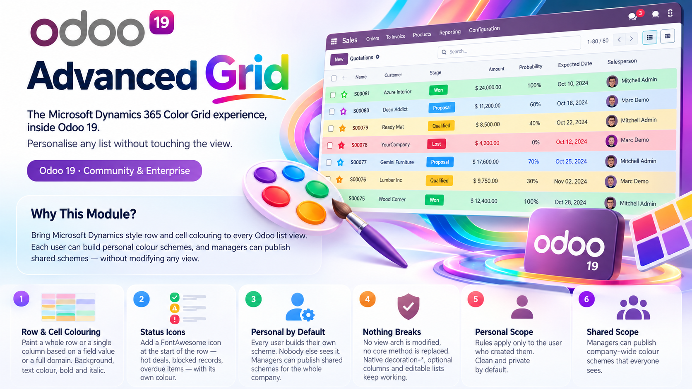

Odoo 19 - Community & Enterprise
Bring Microsoft Dynamics style row and cell colouring to every Odoo list view. Each user can build personal colour schemes, and managers can publish shared schemes — without modifying any view.
Paint a whole row or a single column based on a field value or a full domain. Background, text colour, bold and italic.
Add a FontAwesome icon at the start of the row — hot deals, blocked records, overdue items — with its own colour.
Every user builds their own scheme. Nobody else sees it. Managers can publish shared schemes for the whole company.
No view arch is modified, no core method is replaced. Native decoration-*, optional columns and editable lists keep working.
Rules apply only to the user who created them. Clean and private by default.
Managers can publish company-wide colour schemes that everyone sees.
|
 |
 |
|
 |
 |

| Dynamics 365 | Advanced Grid for Odoo |
|---|---|
| Color Grid command | “Color Grid” button next to New |
| Row colouring by field | Rule targeting the whole row |
| Cell colouring | Rule targeting one column |
| Row status icons | Icon rule with custom colour |
| Personal view settings | Personal scope (per user) |
| System-wide scheme | Shared scope (manager only) |
Bring Dynamics-style Color Grid to every Odoo list - personal or shared, zero view changes.
Compatible with Odoo 19 Community & Enterprise
ERPishro.com - AliReza Nemati - Farid Shohoudi